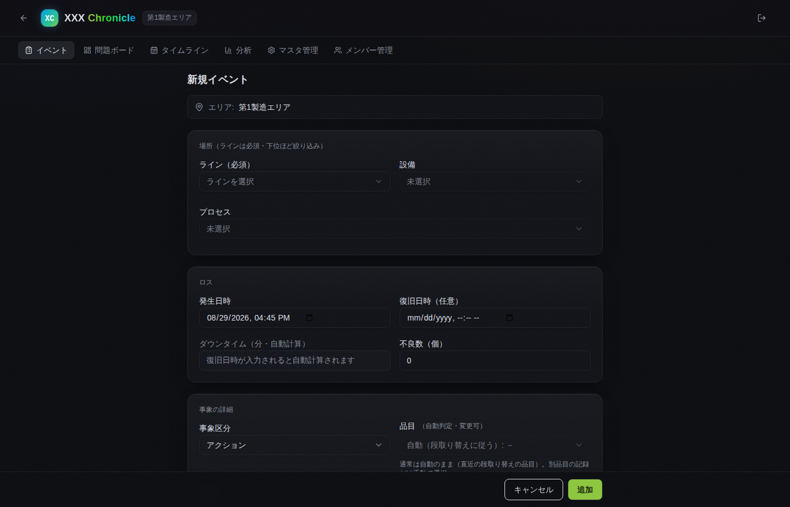
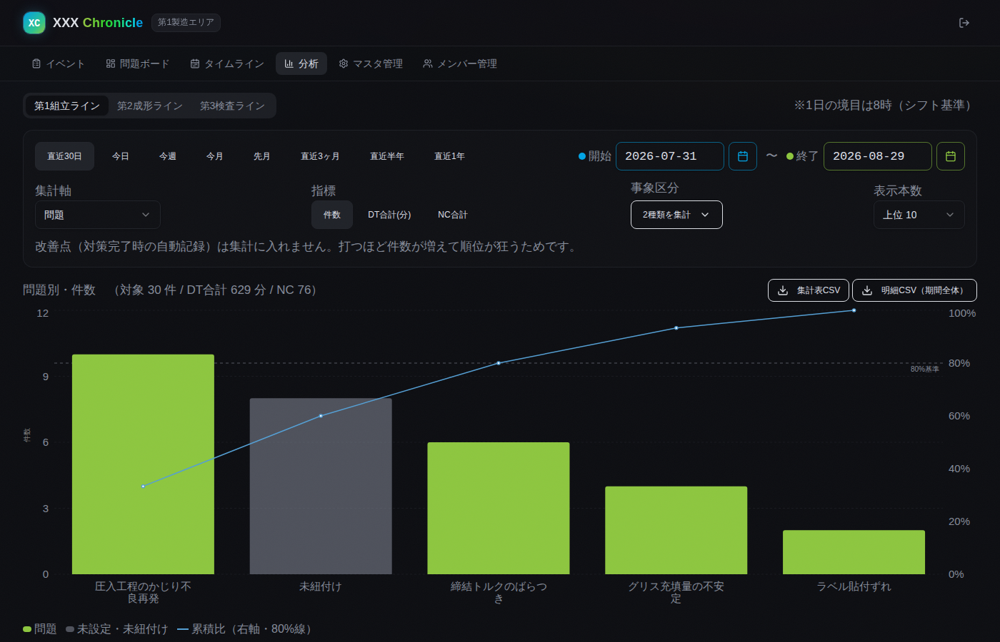
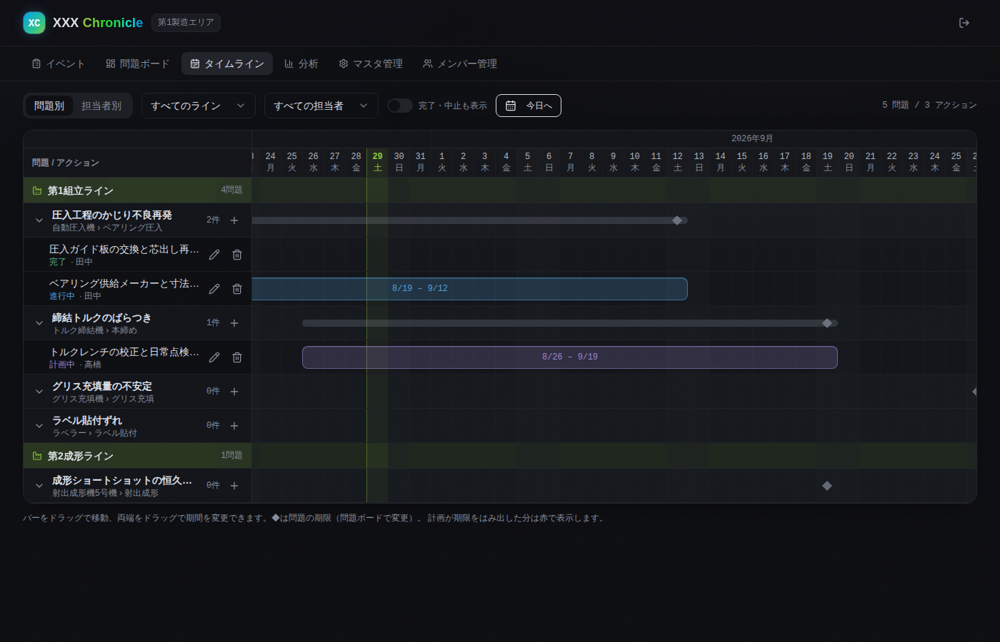

FIELD RECORDS
現場の記録を、そのまま改善につなぐ
発表者: 高瀬2026.08.27
01 / 9
現場が回し、技術が仕組みを作り、改善は二人で
現場（つくる人）
決められた通りに作り続ける
異常に、最初に気づく
止まったら、その場で復旧する
両方の仕事
起きたトラブル
なぜ起きたかを調べる
対策を決めて実行する
繰り返さないようにする
技術（つくる仕組みを作る人）
生産ラインを立ち上げる
標準と作業手順書を作る
良品条件を決め、品質を作り込む
重なっているところのやりとりが、いまは紙と表計算のファイルと口頭に分かれています。
02 / 9
困りごとの根っこは、記録がつながっていないこと
01
対策が場当たりになる
同じことが何回起きたか
数えられない。だから
目についた順に手を打つ。
02
効いたか分からない
対策の記録とトラブルが
別の場所にある。だから
前と後ろを比べられない。
03
別の問題に気づけない
変えた事実が残らない。
だから悪くなり始めた
時期と結びつかない。
三つとも、私が自分の現場で感じたことです。根っこは同じで、記録はあるのに、つながっていません。
03 / 9
記録から効果確認までを1本の輪にした
P 計画
どれを直すか決める
②束ねる ③測る ④順位 ⑤原因の見当
問題ボード・パレート図・時系列
→
D 実行
対策を動かす
⑥担当と期日を付けて動かす
工程表
↓
C 確認
効いたか確かめる
⑦前と後で1日あたりを比べる
前後の比較
←
A 改善
次へつなぐ
対策の実施も、また記録になる
自動で1件たまる
↑
①記録する
入力フォーム
04 / 9
05 / 9
画面は既製の土台の上に組んでいる
技術
何ができる道具か（言語・位置づけ）
今回どこに使ったか
React 19
画面を部品に分けて組む。TypeScript のライブラリ
画面全体。部品にして使い回す
TypeScript
JavaScript に型を足した言語。誤りを先に見つける
画面もサーバも、この言語で書いている
Vite
書き手がコードを保存した瞬間に、画面へ反映
言語でもライブラリでもなく、開発時だけ動く道具
開発中の画面づくり。試す回数が増える
ほかに TanStack Query を使い、取ってきたデータを覚えておいて同じ問い合わせを繰り返さないようにしています。
06 / 9
見た目は既製品、足りない所だけ自作した

Tailwind CSS ／ shadcn/ui
CSS の書き方と部品の配り方
入力欄もボタンも既製

Recharts
React 用のグラフ部品
棒と折れ線を1つの図に

自作の工程表
素の div ＋ Tailwind
日付もドラッグも画面側
three.js ／ WebGL
3Dの仕組みとライブラリ
毎回その場で描く背景
07 / 9
データの定義を1本にして、ずれを防ぐ
技術
何ができる道具か（言語・位置づけ）
今回どこに使ったか
Node.js ／ Express
JavaScript をサーバで動かす土台と、要求の振り分け
APIの受け口。画面と同じ言語で書ける
PostgreSQL
表でデータを持つ SQL のデータベース
件数・合計・並べ替えの集計を担当
Drizzle ORM ／ Zod
SQL を書かず TypeScript のまま読み書きできる（ORM）
テーブル定義1本から、表・型・チェックを作る
表づくりは開発時、読み書きは実行時
表と型とチェックが同じ定義から出るので、人が三か所に同じことを書かずに済みます。
08 / 9
同じアプリを、クラウドにも社内にも置ける
クラウド（Vercel）
社内のサーバ
無改造では移せません。静的ファイルの配り方・書き込み先・本文の大きさ・実行時間は揃えます。
09 / 9